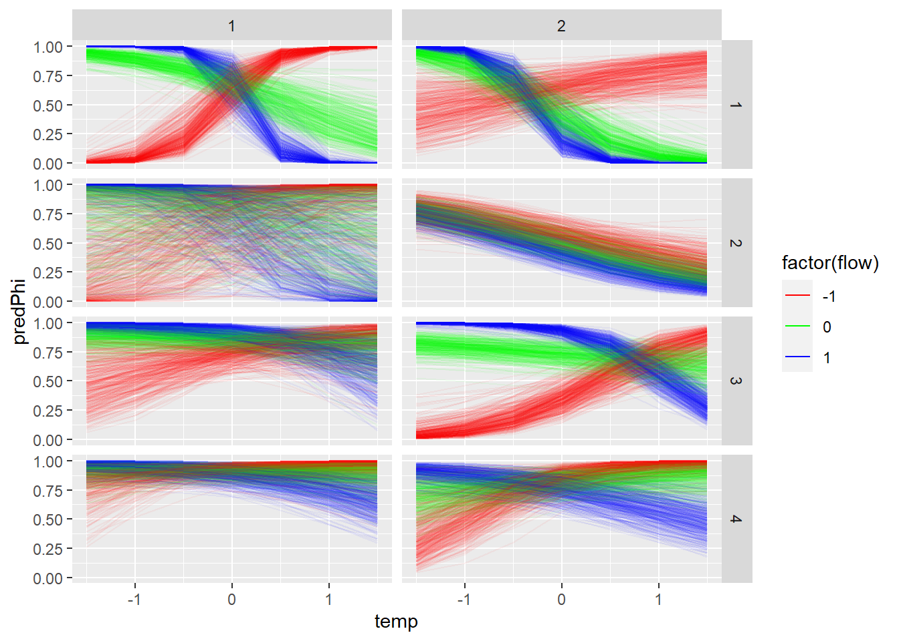

11 Flow effects on survival (phi) models with cohort structure - O’Bear only
Probability of survival (phi) model structure:
logit(phi[t,i]) <-
betaInt[ isYOY[i,t],season[t],cohort[i]] +
betaFlow[1,isYOY[i,t],season[t]] * flow[i,t] +
betaFlow[2,isYOY[i,t],season[t]] * temp[i,t] +
betaFlow[3,isYOY[i,t],season[t]] * temp[i,t] * flow[i,t]
Probability of capture (p) model structure:
logit(p[t,i]) <- betaP[isYOY[i,t],season[t-1],cohort[i]]
The goal of this modelling exercise is to evaluate the effect of new tributary-specific stream flow estimates on survival of brook trout. Here, we compare survival within one tributary (O’Bear Brook) with flow input data as 1) single flow estimate for all locations (historical approach) and 2) hindcasted flows for each tributary based on new tributary-specific flows which are available since 2000.
The goal is to compare survival estimates with tributary-specific flow to estimates with common flow across locations.
Note: a model without cohort structure is here modelsCMR_ft_Flow_OB.qmd but is not included because results are similar but without the cohort estimates.
Structure options include [species, cohort, season, isYOY, flow, flow^2]
11.0.1 Model with original flow data
Cohort-dependent estimates of phi and p with flow and temperature hierarchical effects
11.0.1.1 Retrieve model results
Model is run using targets in R/modelCMR_tt_ft_cohort_OB.R
Code
# Following https://oliviergimenez.github.io/bayesian-cr-workshop/worksheets/4_demo.html
#
out_flow <- tar_read(tt_modelOut_ft_cohort_OB_flow )
MCMCplot(object = out_flow$mcmc)
Code
summary_flow <- MCMCsummary(object = out_flow$mcmc, round = 3) %>%
mutate(flowData = "flow") %>%
rownames_to_column(var = "var")
#summary_flow %>% filter(grepl("betaIntYOYSeason", var))
#summary_flow %>% filter(grepl("betaPhiYOYSeason", var))
#summary_flow %>% filter(grepl("betaFlow", var))
#summary_flow %>% filter(grepl("betaInt", var))
priors <- runif(out_flow$runData$nIter * out_flow$runData$nChains, 0, 1)
MCMCtrace(object = out_flow$mcmc,
#ISB = FALSE,
#exact = TRUE,
params = c(
"betaIntYOYSeason", "betaPhiYOYSeason","betaPYOYSeason"
# "betaIntTop", "betaPhiTop","betaFlowTop","betaPTop"
# "betaInt", "betaPhi","betaFlow","betaP",
# "betaIntOut", "betaPhiOut","betaFlowOut","betaPOut"
),
pdf = FALSE,
priors = priors)


Code
MCMCtrace(object = out_flow$mcmc,
#ISB = FALSE,
#exact = TRUE,
params = c(
"betaIntYOY", "betaPhiYOY","betaFlowYOY","betaPYOY"
# "betaInt", "betaPhi","betaFlow","betaP",
# "betaIntOut", "betaPhiOut","betaFlowOut","betaPOut"
),
pdf = FALSE,
priors = priors)


11.0.2 Model with flow data hindcast for each rvier
Cohort-dependent estimates of phi and p with flowByRiver hierarchical effects
11.0.2.1 Retrieve model results
Model is run using targets in R/modelCMR_tt_ft_cohort_OB
Code
# Following https://oliviergimenez.github.io/bayesian-cr-workshop/worksheets/4_demo.html
#
out_flowByRiver <- tar_read(tt_modelOut_ft_cohort_OB_flowByRiver)
MCMCplot(object = out_flowByRiver$mcmc)
Code
summary_flowByRiver <- MCMCsummary(object = out_flowByRiver$mcmc, round = 3) %>%
mutate(flowData = "flowByRiver") %>%
rownames_to_column(var = "var")
#summary_flowByRiver %>% filter(grepl("betaIntYOYSeason", var))
#summary_flowByRiver %>% filter(grepl("betaPhiYOYSeason", var))
#summary_flowByRiver %>% filter(grepl("betaFlow", var))
priors <- runif(out_flowByRiver$runData$nIter * out_flowByRiver$runData$nChains, 0, 1)
MCMCtrace(object = out_flowByRiver$mcmc,
#ISB = FALSE,
#exact = TRUE,
params = c( "betaIntYOY", "betaPhiYOY","betaFlowYOY","betaPYOY" ),
pdf = FALSE,
priors = priors)


Code
# MCMCtrace(object = out_flowByRiver$mcmc,
# #ISB = FALSE,
# #exact = TRUE,
# params = c("betaInt"),
# pdf = FALSE,
# priors = priors)11.0.3 Compare parameter estimates of models with flow and flowByRiver
Code
both <- bind_rows(summary_flow, summary_flowByRiver) %>%
rename(lo = '2.5%', hi = '97.5%')
ggplot(both %>% filter(grepl("betaFlowTop", var)), aes(color = flowData)) +
geom_point(aes(var, mean), size = 2, position = position_dodge(width = 0.5)) +
geom_errorbar( aes(var, ymin = lo, ymax = hi), width = 0.4, position = position_dodge(width = 0.5)) Code
ggplot(both %>% filter(grepl("betaFlowYOY", var)), aes(color = flowData)) +
geom_point(aes(var, mean), size = 2, position = position_dodge(width = 0.5)) +
geom_errorbar( aes(var, ymin = lo, ymax = hi), width = 0.4, position = position_dodge(width = 0.5)) +
theme(axis.text.x = element_text(angle = 90, vjust = 1, hjust=1))
Code
ggplot(both %>% filter(grepl("betaIntYOY", var)), aes(color = flowData)) +
geom_point(aes(var, mean), size = 2, position = position_dodge(width = 0.5)) +
geom_errorbar( aes(var, ymin = lo, ymax = hi), width = 0.4, position = position_dodge(width = 0.5)) +
theme(axis.text.x = element_text(angle = 90, vjust = 1, hjust=1))Code
ggplot(both %>% filter(grepl("betaIntYOYSeason", var)), aes(color = flowData)) +
geom_point(aes(var, mean), size = 2, position = position_dodge(width = 0.5)) +
geom_errorbar( aes(var, ymin = lo, ymax = hi), width = 0.4, position = position_dodge(width = 0.5)) +
theme(axis.text.x = element_text(angle = 90, vjust = 1, hjust=1))
Code
ggplot(both %>% filter(grepl("betaInt\\[", var)), aes(color = flowData)) +
geom_point(aes(var, mean), size = 2, position = position_dodge(width = 0.5)) +
geom_errorbar( aes(var, ymin = lo, ymax = hi), width = 0.4, position = position_dodge(width = 0.5)) +
theme(axis.text.x = element_text(angle = 90, vjust = 1, hjust=1))
Code
ggplot(both %>% filter(grepl("betaPYOY", var)), aes(color = flowData)) +
geom_point(aes(var, mean), size = 2, position = position_dodge(width = 0.5)) +
geom_errorbar( aes(var, ymin = lo, ymax = hi), width = 0.4, position = position_dodge(width = 0.5)) +
theme(axis.text.x = element_text(angle = 90, vjust = 1, hjust=1))
Code
# ggplot(both %>% filter(grepl("betaPOut", var)), aes(color = flowData)) +
# geom_point(aes(var, mean), size = 2, position = position_dodge(width = 0.5)) +
# geom_errorbar( aes(var, ymin = lo, ymax = hi), width = 0.4, position = position_dodge(width = 0.5)) +
# theme(axis.text.x = element_text(angle = 90, vjust = 1, hjust=1))11.0.4 Survival comparisons
Code
getBetas <- function(d) {
#betaFlow
betaFlow <- d %>%
filter(grepl("betaInt\\[", var)) %>%
mutate(
flowData = "flow",
tmp = str_match(var, "\\[([0-9]+), ([0-9]+), ([0-9]+)\\]")[, 2:4] %>% as.data.frame(),
param = tmp$V1,
isYOY = tmp$V2,
season = tmp$V3
) %>%
select(-tmp)
betaFlowYOY <- d %>%
filter(grepl("betaFlowYOY", var)) %>%
mutate(
flowData = "flow",
tmp = str_match(var, "\\[([0-9]+), ([0-9]+)\\]")[, 2:3] %>% as.data.frame(),
param = tmp$V1,
isYOY = tmp$V2,
) %>%
select(-tmp)
betaFlowTop <- d %>%
filter(grepl("betaFlowTop", var)) %>%
mutate(
flowData = "flow",
tmp = str_match(var, "\\[([0-9]+)\\]") %>% as.data.frame(),
param = tmp$V2
) %>%
select(-tmp)
}
getBetaIntOuts <- function(d, dataType = "flow") {
#betaFlow
betaInt <- d %>%
filter(grepl("betaIntOut\\[", var)) %>%
mutate(
flowData = dataType,
tmp = str_match(var, "\\[([0-9]+), ([0-9]+), ([0-9]+)\\]")[, 2:4] %>% as.data.frame(),
isYOY = tmp$V1,
season = tmp$V2,
cohort = tmp$V3,
varName = "betaInt"
) %>%
select(-tmp) %>%
filter(!(season == 2 & isYOY == 1))
betaIntYOY <- d %>%
filter(grepl("betaIntYOYOut\\[", var)) %>%
mutate(
flowData = dataType,
tmp = str_match(var, "\\[([0-9]+)\\]") %>% as.data.frame(),
isYOY = tmp$V2,
varName = "betaIntYOY"
) %>%
select(-tmp)
betaIntYOYSeason <- d %>%
filter(grepl("betaIntYOYSeasonOut\\[", var)) %>%
mutate(
flowData = dataType,
tmp = str_match(var, "\\[([0-9]+), ([0-9]+)\\]")[, 2:3] %>% as.data.frame(),
isYOY = tmp$V1,
season = tmp$V2,
varName = "betaIntYOYSeason"
) %>%
select(-tmp) %>%
filter(!(season == 2 & isYOY == 1))
return(
bind_rows(betaInt, betaIntYOY, betaIntYOYSeason) %>%
mutate(cohort = as.numeric(cohort) + 2002 - 1)
)
}11.0.4.1 Get betaIntOut estimates
Code
betaIntFlow <- getBetaIntOuts(summary_flow, "flow")
betaIntFlowByRiver <- getBetaIntOuts(summary_flowByRiver, "flowByRiver")
betaInts <- bind_rows(betaIntFlow, betaIntFlowByRiver) %>%
rename(lo = '2.5%', hi = '97.5%', median = '50%')Code
# Define the facet labeller function
labelsIntYOY <- c(
"1" = "Growth year 1",
"2" = "Growth year 2"
)
labelsIntSeason <- c(
"1" = "Spring",
"2" = "Summer",
"3" = "Autumn",
"4" = "Winter"
)
global_labellerInt <- labeller(
isYOY = labelsIntYOY,
season = labelsIntSeason
#.default = label_both
)
ggplot(betaInts %>% filter(varName == "betaInt"), aes(cohort, mean, color = flowData)) +
geom_point(size = 2, position = position_dodge(width = 0.5)) +
geom_errorbar(aes(cohort, ymin = lo, ymax = hi), width = 0.4, position = position_dodge(width = 0.5)) +
scale_x_continuous("Cohort") +
scale_y_continuous("Suvrival") +
facet_grid(season~isYOY, labeller = global_labellerInt) +
guides(color = guide_legend(
title = "Data source"
))Code
global_labellerIntYOYSeason <- labeller(
isYOY = labelsIntYOY
# season = labelsIntSeason
#.default = label_both
)
ggplot(betaInts %>% filter(varName == "betaIntYOYSeason"), aes(season, mean, color = flowData)) +
geom_point(size = 2, position = position_dodge(width = 0.5)) +
geom_errorbar(aes(season, ymin = lo, ymax = hi), width = 0.4, position = position_dodge(width = 0.5)) +
scale_x_discrete("Season") +
scale_y_continuous("Suvrival") +
facet_grid(~isYOY, labeller = global_labellerIntYOYSeason) +
guides(color = guide_legend(
title = "Data source"
))
Code
ggplot(betaInts %>% filter(varName == "betaIntYOY"), aes(isYOY, mean, color = flowData)) +
geom_point(size = 2, position = position_dodge(width = 0.5)) +
geom_errorbar(aes(isYOY, ymin = lo, ymax = hi), width = 0.4, position = position_dodge(width = 0.5))
11.0.5 Flow effect predictions
Code
getPredictions_FlowYOYSeasonCohort <- function(toSave, everyNIters = 10, flowStep = 0.5){
mcmc <- toSave$mcmc
## betaInt
predictorsBetaInt <- expand.grid(
iter = seq(1, dim(mcmc$chain1)[1], everyNIters),
isYOY = 1:2,
season = 1:toSave$myConstants$nSeasons,
cohort = 1:toSave$myConstants$nCohorts
)
for(i in 1:nrow(predictorsBetaInt)){
predictorsBetaInt$betaInt[i] <- mcmc$chain1[[predictorsBetaInt[i, "iter"],
paste0("betaInt[", predictorsBetaInt[i, "isYOY"],
", ", predictorsBetaInt[i, "season"],
", ", predictorsBetaInt[i, "cohort"],
"]")
]]
}
# ## betaPhi
# predictorsBetaPhi <- expand.grid(
# iter = seq(1, dim(mcmc$chain1)[1], everyNIters),
# isYOY = 1:2,
# season = 1:toSave$myConstants$nSeasons,
# cohort = 1:toSave$myConstants$nCohorts
# )
#
# for(i in 1:nrow(predictorsBetaPhi)){
# predictorsBetaPhi$betaPhi[i] <- mcmc$chain1[[predictorsBetaPhi[i, "iter"],
# paste0("betaPhi[", predictorsBetaPhi[i, "isYOY"],
# ", ", predictorsBetaPhi[i, "season"],
# ", ", predictorsBetaPhi[i, "cohort"],
# "]")
# ]]
# }
## betaFlow
predictorsBetaFlow <- expand.grid(
iter = seq(1, dim(mcmc$chain1)[1], everyNIters),
isYOY = 1:2,
season = 1:toSave$myConstants$nSeasons
# cohort = 1:toSave$myConstants$nCohorts
)
for(i in 1:nrow(predictorsBetaFlow)){
predictorsBetaFlow$betaFlow1[i] <- mcmc$chain1[[predictorsBetaFlow[i, "iter"],
paste0("betaFlow[1, ", predictorsBetaFlow[i, "isYOY"],
", ", predictorsBetaFlow[i, "season"],
# ", ", predictorsBetaFlow[i, "cohort"],
"]")
]]
predictorsBetaFlow$betaFlow2[i] <- mcmc$chain1[[predictorsBetaFlow[i, "iter"],
paste0("betaFlow[2, ", predictorsBetaFlow[i, "isYOY"],
", ", predictorsBetaFlow[i, "season"],
# ", ", predictorsBetaFlow[i, "cohort"],
"]")
]]
predictorsBetaFlow$betaFlow3[i] <- mcmc$chain1[[predictorsBetaFlow[i, "iter"],
paste0("betaFlow[3, ", predictorsBetaFlow[i, "isYOY"],
", ", predictorsBetaFlow[i, "season"],
# ", ", predictorsBetaFlow[i, "cohort"],
"]")
]]
}
predictorsAll <- expand.grid(
iter = seq(1, dim(mcmc$chain1)[1], everyNIters),
isYOY = 1:2,
cohort = 1:toSave$myConstants$nCohorts,
season = 1:toSave$myConstants$nSeasons,
flow = seq(-1.5, 1.5, flowStep),
temp = seq(-1.5, 1.5, flowStep)
)
preds <- predictorsAll %>%
left_join(predictorsBetaInt) %>%
left_join(predictorsBetaFlow) %>%
# left_join(predictorsBetaPhi) %>%
mutate(predPhi = plogis(betaInt + betaFlow1 * flow + betaFlow2 * temp + betaFlow3 * flow * temp))
return(preds)
}Code
getPredictions_FlowYOYSeason <- function(toSave, everyNIters = 10, flowStep = 0.5){
mcmc <- toSave$mcmc
## betaInt
predictorsBetaInt <- expand.grid(
iter = seq(1, dim(mcmc$chain1)[1], everyNIters),
isYOY = 1:2,
season = 1:toSave$myConstants$nSeasons
# cohort = 1:toSave$myConstants$nCohorts
)
for(i in 1:nrow(predictorsBetaInt)){
predictorsBetaInt$betaInt[i] <- mcmc$chain1[[predictorsBetaInt[i, "iter"],
paste0("betaIntYOYSeason[", predictorsBetaInt[i, "isYOY"],
", ", predictorsBetaInt[i, "season"],
# ", ", predictorsBetaInt[i, "cohort"],
"]")
]]
}
# ## betaPhi
# predictorsBetaPhi <- expand.grid(
# iter = seq(1, dim(mcmc$chain1)[1], everyNIters),
# isYOY = 1:2,
# season = 1:toSave$myConstants$nSeasons
# # cohort = 1:toSave$myConstants$nCohorts
# )
#
# for(i in 1:nrow(predictorsBetaPhi)){
# predictorsBetaPhi$betaPhi[i] <- mcmc$chain1[[predictorsBetaPhi[i, "iter"],
# paste0("betaPhiYOYSeason[", predictorsBetaPhi[i, "isYOY"],
# ", ", predictorsBetaPhi[i, "season"],
# # ", ", predictorsBetaPhi[i, "cohort"],
# "]")
# ]]
# }
## betaFlow
predictorsBetaFlow <- expand.grid(
iter = seq(1, dim(mcmc$chain1)[1], everyNIters),
isYOY = 1:2,
season = 1:toSave$myConstants$nSeasons
# cohort = 1:toSave$myConstants$nCohorts
)
for(i in 1:nrow(predictorsBetaFlow)){
predictorsBetaFlow$betaFlow1[i] <- mcmc$chain1[[predictorsBetaFlow[i, "iter"],
paste0("betaFlow[1, ", predictorsBetaFlow[i, "isYOY"],
", ", predictorsBetaFlow[i, "season"],
# ", ", predictorsBetaFlow[i, "cohort"],
"]")
]]
predictorsBetaFlow$betaFlow2[i] <- mcmc$chain1[[predictorsBetaFlow[i, "iter"],
paste0("betaFlow[2, ", predictorsBetaFlow[i, "isYOY"],
", ", predictorsBetaFlow[i, "season"],
# ", ", predictorsBetaFlow[i, "cohort"],
"]")
]]
predictorsBetaFlow$betaFlow3[i] <- mcmc$chain1[[predictorsBetaFlow[i, "iter"],
paste0("betaFlow[3, ", predictorsBetaFlow[i, "isYOY"],
", ", predictorsBetaFlow[i, "season"],
# ", ", predictorsBetaFlow[i, "cohort"],
"]")
]]
}
predictorsAll <- expand.grid(
iter = seq(1, dim(mcmc$chain1)[1], everyNIters),
isYOY = 1:2,
# cohort = 1:toSave$myConstants$nCohorts,
season = 1:toSave$myConstants$nSeasons,
flow = seq(-1.5, 1.5, flowStep),
temp = seq(-1.5, 1.5, flowStep)
)
preds <- predictorsAll %>%
left_join(predictorsBetaInt) %>%
left_join(predictorsBetaFlow) %>%
# left_join(predictorsBetaPhi) %>%
mutate(predPhi = plogis(betaInt + betaFlow1 * flow + betaFlow2 * temp + betaFlow3 * flow * temp))
return(preds)
}Code
predFlowYOYSeason <- getPredictions_FlowYOYSeason(out_flow, everyNIters = 5) %>%
mutate(flowData = "flow")
predFlowByRiverYOYSeason <- getPredictions_FlowYOYSeason(out_flowByRiver, everyNIters = 5) %>%
mutate(flowData = "flowByRiver")
predBoth <- bind_rows(predFlowYOYSeason, predFlowByRiverYOYSeason)11.0.5.1 Graph effect flow predictions
Predictions based on flow from the flow extension curve - original approach
Code
colors <- c("blue", "green", "red")
ggplot(predFlowYOYSeason %>% filter(temp %in% c(-1,0,1)), aes(flow, predPhi, group = ((paste0(iter,temp, sep = "_"))))) +
geom_line(aes(color = factor(temp)), alpha = 0.05) +
scale_color_manual(values = colors) +
guides(colour = guide_legend(override.aes = list(alpha = 1))) +
facet_grid(season ~ isYOY)
Predictions based on flow from flowByRiver
Code
ggplot(predFlowByRiverYOYSeason %>% filter(temp %in% c(-1,0,1)), aes(flow, predPhi, group = ((paste0(iter,temp, sep = "_"))))) +
geom_line(aes(color = factor(temp)), alpha = 0.05) +
scale_color_manual(values = colors) +
guides(colour = guide_legend(override.aes = list(alpha = 1))) +
facet_grid(season ~ isYOY)Similar format to to the 2015 paper
Code
colors <- c("red", "green", "blue")
ggplot(predFlowYOYSeason %>% filter(flow %in% c(-1,0,1)), aes(temp, predPhi, group = ((paste0(iter,flow, sep = "_"))))) +
geom_line(aes(color = factor(flow)), alpha = 0.05) +
scale_color_manual(values = colors) +
guides(colour = guide_legend(override.aes = list(alpha = 1))) +
facet_grid(season ~ isYOY)
11.0.6 Flow effect predictions by cohort
Code
predFlowYOYSeasonCohort <- getPredictions_FlowYOYSeasonCohort(out_flow, everyNIters = 5) %>%
mutate(flowData = "flow")
predFlowByRiverYOYSeasonCohort <- getPredictions_FlowYOYSeasonCohort(out_flowByRiver, everyNIters = 5) %>%
mutate(flowData = "flowByRiver")
predBothCohort <- bind_rows(predFlowYOYSeasonCohort, predFlowByRiverYOYSeasonCohort)11.0.6.1 Graph flow predictions
Predictions based on flow from the flow extension curve - original approach
Code
colors <- c("blue", "green", "red")
ggplot(predFlowYOYSeasonCohort %>% filter(temp %in% c(-1,0,1)), aes(flow, predPhi, group = ((paste0(iter,temp,cohort, sep = "_"))))) +
geom_line(aes(color = factor(temp)), alpha = 0.05) +
scale_color_manual(values = colors) +
facet_grid(season ~ isYOY + cohort)
Predictions based on flow from flowByRiver
Code
ggplot(predFlowByRiverYOYSeasonCohort %>% filter(temp %in% c(-1,0,1)), aes(flow, predPhi, group = ((paste0(iter,temp,cohort, sep = "_"))))) +
geom_line(aes(color = factor(temp)), alpha = 0.05) +
scale_color_manual(values = colors) +
facet_grid(season ~ isYOY + cohort)Similar format to to the 2015 paper
Code
ggplot(predFlowYOYSeasonCohort %>% filter(flow %in% c(-1,0,1)), aes(temp, predPhi, group = ((paste0(iter,flow,cohort, sep = "_"))))) +
geom_line(aes(color = factor(flow)), alpha = 0.05) +
scale_color_manual(values = colors) +
facet_grid(season ~ isYOY)11.0.7 Relate flow/temp to survival
Get flow average flow and temp data for each occasion (cohort/season)
Flow data pathway -
| Raw data in envDataWB_target from getDataEnv_targets.R
| Data added to cdWB_CMR0_targetusing addEnvironmental() in getDataCMR_targets.R | Data scaled using scaleEnvData() in getDataCMR_targets.R | meanFlowScaled | meanFlowByRiverScaled | meanTemperatureScaled |cdWB_CMR0_targetfeeds into getEH_AIS() to createeh_WB_2002_2014_target|eh_WB_2002_2014_target$data contains filtered data that created the components of eh_WB_2002_2014_target that are used for CMR analysis. We can useeh_WB_2002_2014_target`$data to get summary flow and temp data
Code
eh_OB_2002_2014_target = tar_read(eh_OB_2002_2014_target)
mFlowTemp <- eh_OB_2002_2014_target$data %>%
group_by(cohort, season) %>%
summarize(mFlow = mean(meanFlowScaled),
mFlowByRiver = mean(meanFlowByRiverScaled),
mTemp = mean(meanTemperatureScaled),
n = n()) %>%
mutate(season = as.character(season))
betaIntsFT <- betaInts %>%
left_join(mFlowTemp)How do the flow metrics (river, byRiver) compare to each other?
Code
ggplot(betaIntsFT %>% filter(varName == "betaInt"), aes(mFlow, mFlowByRiver, color = as.factor(cohort))) +
geom_point() +
geom_abline(intercept = 0, slope = 1) +
facet_wrap(~ season)How do flow/flowByRiver compare to temperature?
Code
ggplot(betaIntsFT %>% filter(varName == "betaInt"), aes(mFlow, mTemp, color = as.factor(cohort))) +
geom_point() +
geom_abline(intercept = 0, slope = 1) +
facet_wrap(~ season)
Code
ggplot(betaIntsFT %>% filter(varName == "betaInt"), aes(mFlowByRiver, mTemp, color = as.factor(cohort))) +
geom_point() +
geom_abline(intercept = 0, slope = 1) +
facet_wrap(~ season)
How do the flow metrics (river, byRiver) compare to survival estimates?
Code
ggplot(betaIntsFT %>% filter(varName == "betaInt"), aes(mFlow, mean)) +
geom_smooth(se = FALSE, color = "darkgrey") +
geom_point(aes(color = as.factor(cohort))) +
facet_grid(season ~ isYOY)Code
ggplot(betaIntsFT %>% filter(varName == "betaInt"), aes(mFlowByRiver, mean)) +
geom_smooth(se = FALSE, color = "darkgrey") +
geom_point(aes(color = as.factor(cohort))) +
facet_grid(season ~ isYOY)
Code
ggplot(betaIntsFT %>% filter(varName == "betaInt"), aes(mTemp, mean)) +
geom_smooth(se = FALSE, color = "darkgrey") +
geom_point(aes(color = as.factor(cohort))) +
facet_grid(season ~ isYOY)
How do mean survival estimates compare to flow and flowByriver on the same graph?
Code
ggplot(betaIntsFT %>% filter(varName == "betaInt"), aes(mFlowByRiver, mean)) +
geom_smooth(se = FALSE, color = "#303140") +
geom_point(color = "#303140") +
geom_smooth(aes(mFlow, mean), se = FALSE, color = "#d46313") +
geom_point(aes(mFlow, mean), color = "#d46313") +
scale_x_continuous("Flow (orange) or flow by river (black)") +
facet_grid(season ~ isYOY)